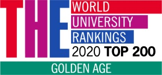

About baghdad university
The first thing that will strike your eye when you enter our university will be the large number of students from wide geographical area extending over 5000 students from different iraqi states. When asked why they prefer Baghdad university, we always receive the same answer: “The central location and international power.” the location is apparent. In order to understand the international collaborations of our university, a short tour of our campus or website would be sufficient.
achievements

For the second year respectively, the University of Baghdad is ranked in the (151-200) position among the best international universities in the Golden Age THE World University Ranking 2020 for the top list of global universities founded in the aftermath of the Second World War, i.e, established for more than 50 years. It is noteworthy that the University of Baghdad is the only Iraqi university to enter this ranking because it has spanned for more than sixty-four years.